Note
Hello, welcome to the SunFounder Raspberry Pi & Arduino & ESP32 Enthusiasts Community on Facebook! Dive deeper into Raspberry Pi, Arduino, and ESP32 with fellow enthusiasts.
Why Join?
Expert Support: Solve post-sale issues and technical challenges with help from our community and team.
Learn & Share: Exchange tips and tutorials to enhance your skills.
Exclusive Previews: Get early access to new product announcements and sneak peeks.
Special Discounts: Enjoy exclusive discounts on our newest products.
Festive Promotions and Giveaways: Take part in giveaways and holiday promotions.
👉 Ready to explore and create with us? Click [here] and join today!
Get Start with Blynk
You will learn how to use Blynk in this project.
In the event that you trigger widgets on Blynk, your Raspberry Pi will print out their values.
Follow the steps below, and note that you must do them in order and not skip any chapters.
1. Configuring the Blynk
Go to the BLYNK and click START FREE.
Fill in your email address to register an account.
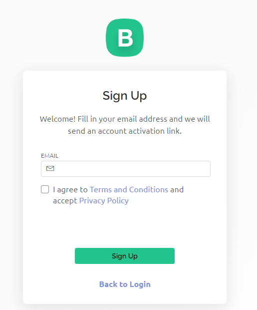
Go to your email address to complete your account registration.
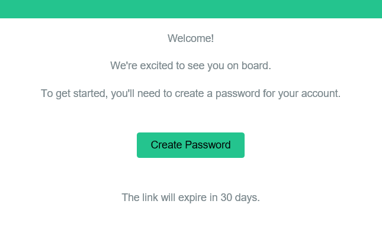
Afterwards, Blynk Tour will appear and you can read it to learn the basic information about the Blynk.
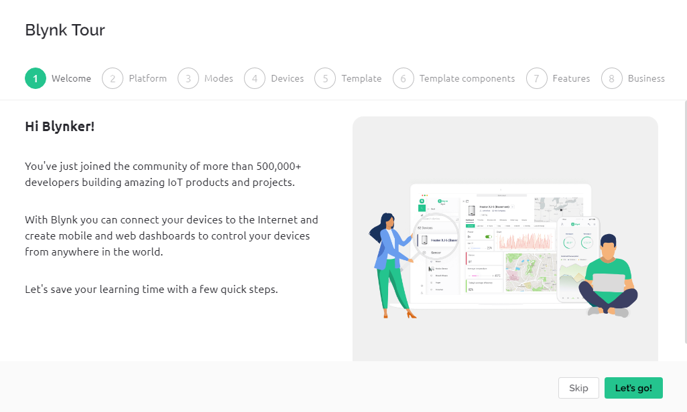
Next we need to create a template and device, click Cancel.
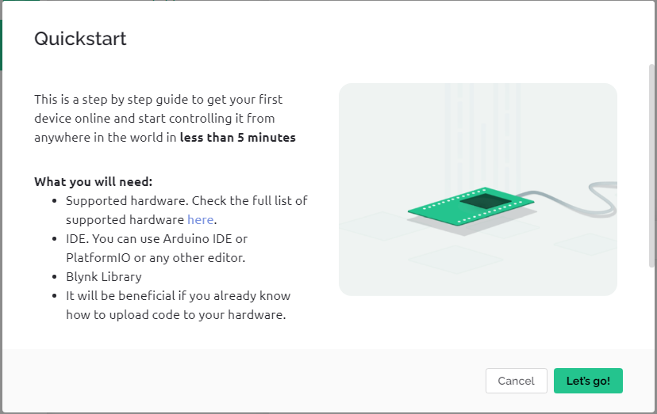
Go to Template from the navigation bar.
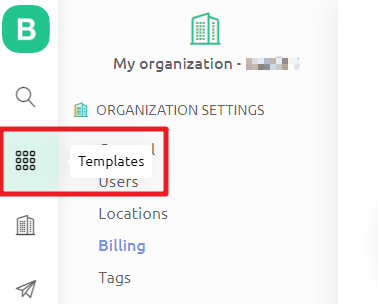
Create New Template
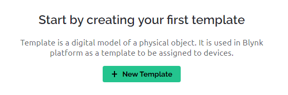
Fill in NAME, feel free to do so; HARDWARE should be Raspberry Pi. Then Done.
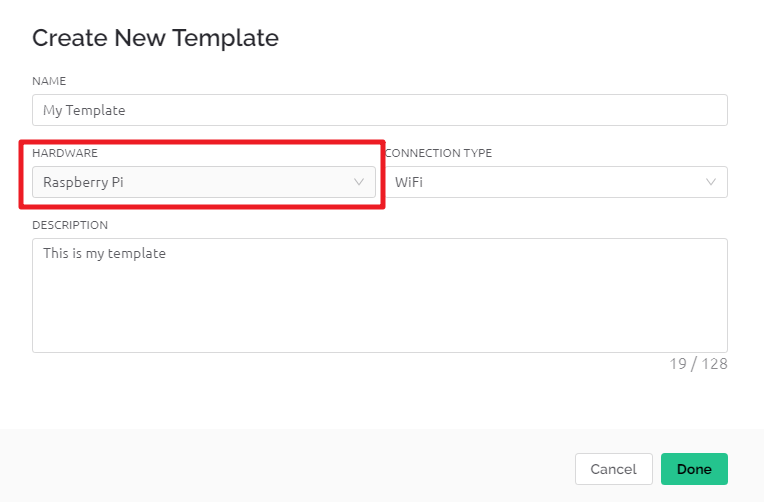
You will be redirected to the Info page, just click on save in the top right corner.
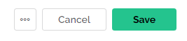
Go to Search page from the navigation bar.
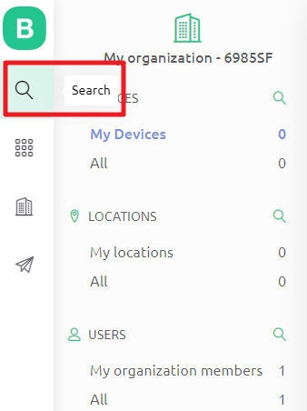
Create New Device.
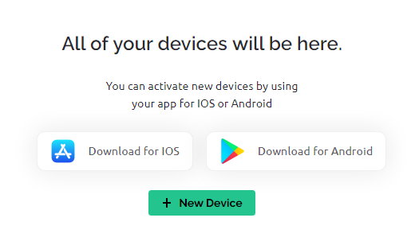
From template.
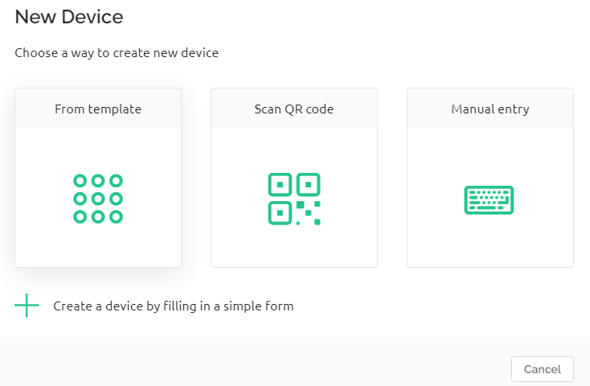
Select TEMPLATE as the one you just set, DEVICE NAME can be customized. Then click Create.
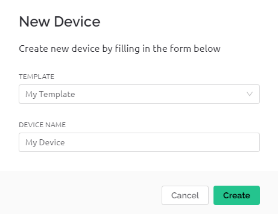
You should now see a page like this one, which means that your initial Blynk setup is complete.
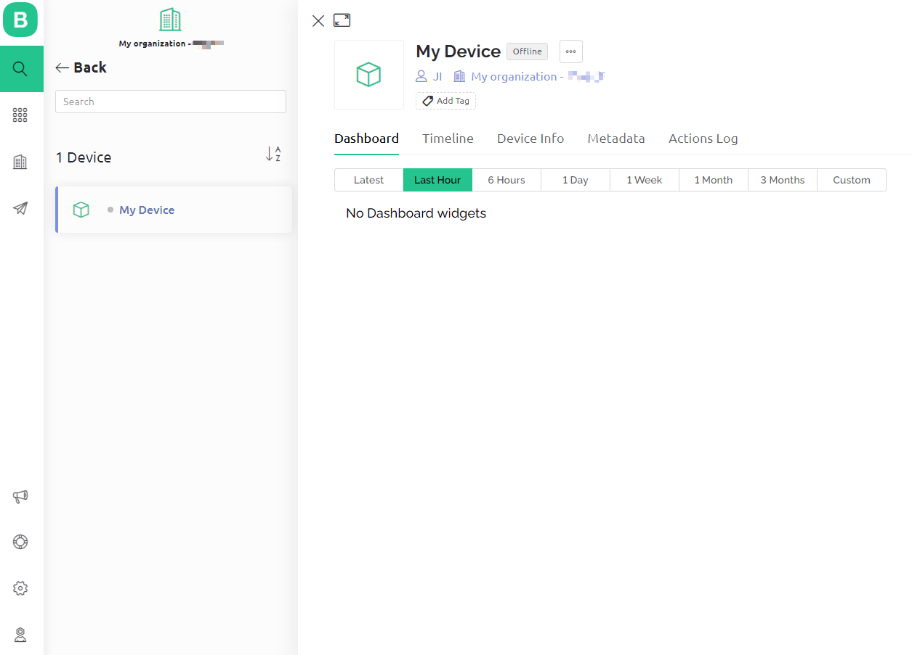
2. Edit Dashboard
Click on the menu icon in the upper right corner and select edit dashboard.
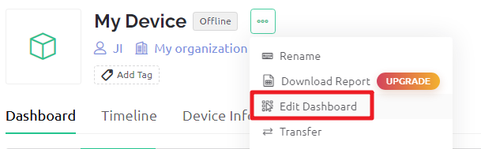
Then drag any CONTROL Widgets you want onto the Dashboard. I dragged a Switch and a Slider.
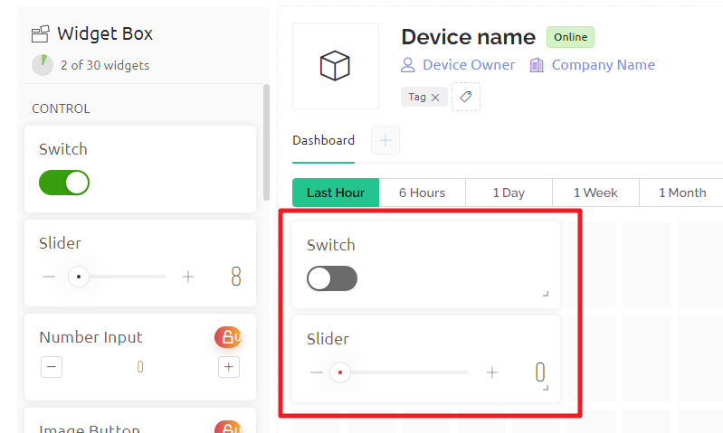
Tap the setting icon on the widget.
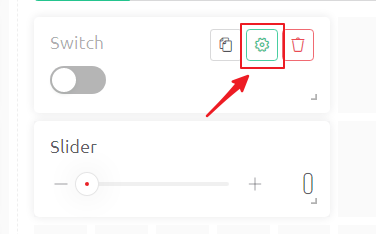
Create Datastream, select Virtual Pin。
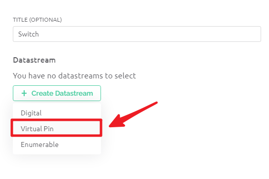
Complete the datastream setup. Here is the datastream created for Switch, so DATA TYPE select
Interger, MIN and MAX set to0and1. Create and then Save.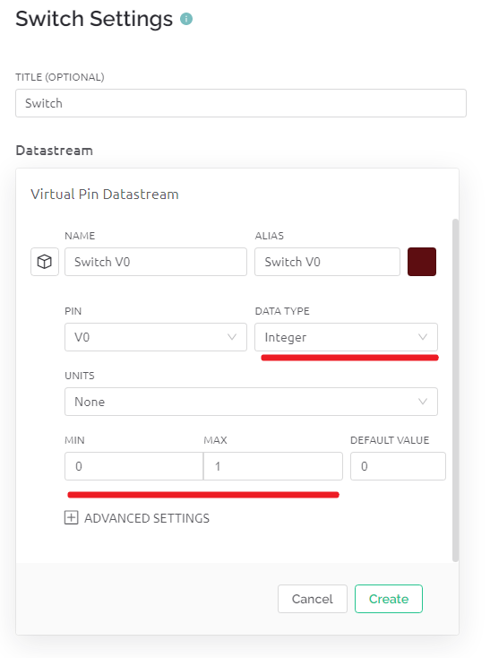
Use the same steps to create a Datastream for the slider widget, and again, modify DATA TYPE, MIN and MAX to what you need.
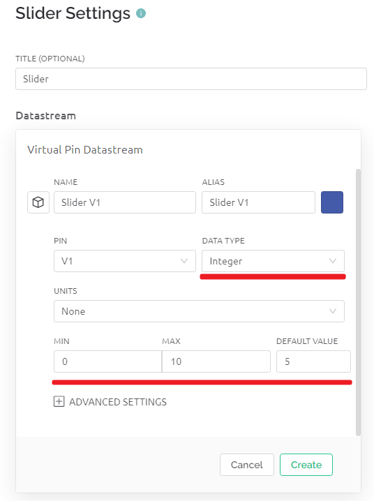
When finished, click Save And Apply at the top right.
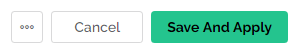
3. Install the Blynk library
Run the following command to install.
cd /home/pi
git clone https://github.com/vshymanskyy/blynk-library-python.git
cd blynk-library-python
sudo python3 setup.py
4. Download the Example
We have provided some examples, please run the following command to download them.
cd /home/pi
git clone https://github.com/sunfounder/blynk-raspberrypi-python.git
5. Run the Code
Go to Blynk’s Device Info page, you will see some information under FIRMWARE CONFIGURATION, you need to copy BLYNK_AUTH_TOKEN down.
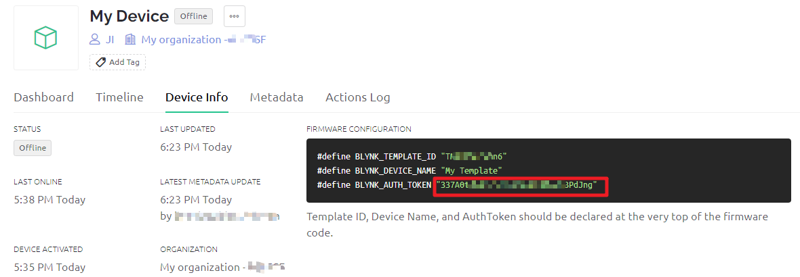
Edit the code.
cd /home/pi/blynk-raspberrypi-python
sudo nano blynk_start.py
Find the line below and past your
BLYNK_AUTH_TOKEN.
BLYNK_AUTH = 'YourAuthToken'
Run the code.
sudo python3 blynk_start.py
Go to Blynk, and operate the widget on Dashboard.
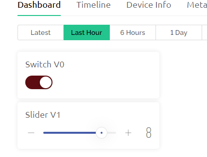
Now you will be able to see your actions on the terminal.
..
___ __ __
/ _ )/ /_ _____ / /__
/ _ / / // / _ \/ '_/
/____/_/\_, /_//_/_/\_\
/___/ for Python v1.0.0 (linux)
Connecting to blynk.cloud:443...
Blynk ready. Ping: 142 ms
V0 value: ['1']
V0 value: ['0']
V1 value: ['3']
V1 value: ['8']
V0 value: ['1']